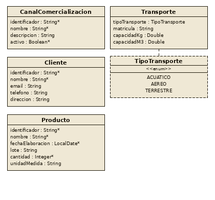
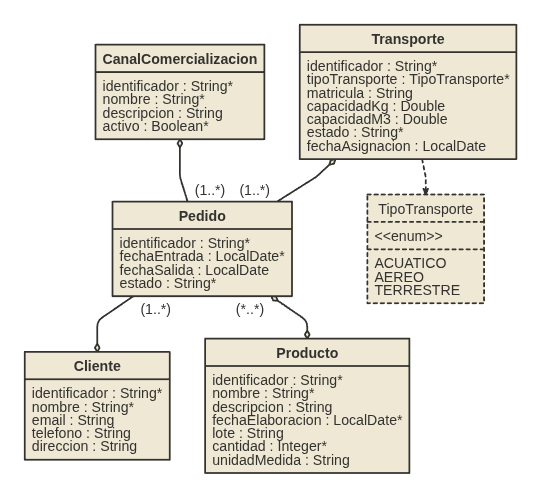
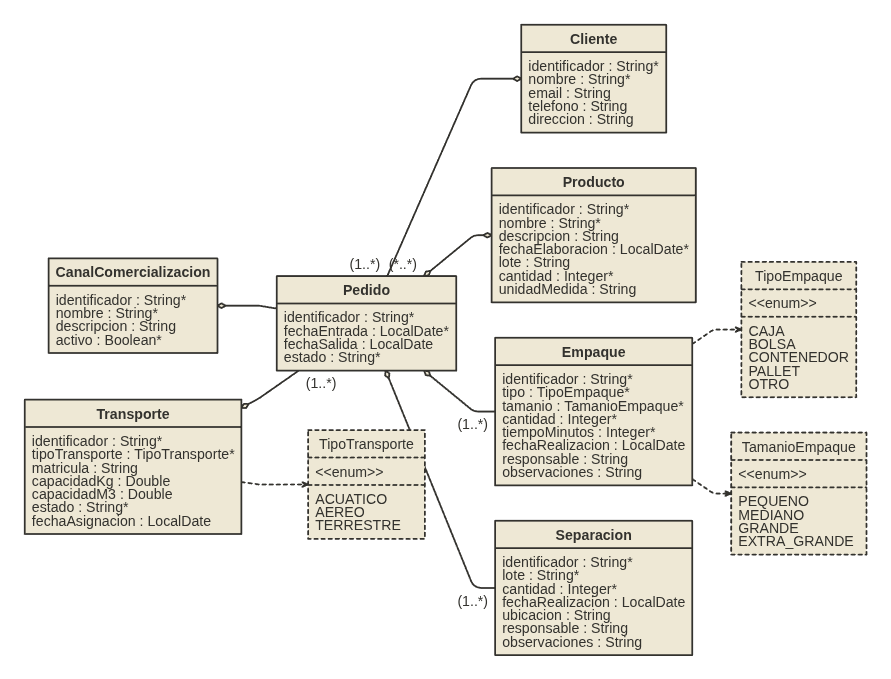

El video muestra el flujo completo de generación y uso de la aplicación: desde la importación del modelo JDL hasta la navegación por las entidades generadas con operaciones CRUD funcionales.
Windows: http://localhost:8080
ó
Linux: http://172.29.0.2:8080/
usuario: admin / admin
Se adoptó Docker Compose como plataforma de contenerización para garantizar un entorno homogéneo entre todos los miembros del equipo y evitar problemas de compatibilidad entre máquinas.
# Levantar el contenedor docker compose -f \ docker/docker-compose.jhipster.yml up -d # Acceder al shell del contenedor ./jhipster-shell.sh # Crear directorio de la aplicación mkdir /evergreen/distribucion cd /evergreen/distribucion
00-aplicacion.jdl# Generar el proyecto base jhipster jdl ../jdl/00-aplicacion.jdl # Instalar libs para pruebas E2E npm install --save-dev @playwright/test \ playwright-bdd @cucumber/cucumber npx playwright install chromium # Crear estructura E2E mkdir -p e2e/steps e2e/support \ e2e/fixtures e2e/reports e2e/.auth
ST1704_evergreen-distribucion/
├── jdl/
│ ├── 00-aplicacion.jdl
│ ├── 01-hu1-catalogos.jdl
│ ├── 02-hu2-pedidos.jdl
│ └── 03-hu3-logistica.jdl
├── docker/
│ └── docker-compose.jhipster.yml
└── distribucion/ ← artefactos generados
Los archivos JDL[3] son acumulativos: cada HU incorpora las entidades anteriores más las nuevas, evitando conflictos de relaciones bidireccionales al regenerar.
entity Cliente { identificador String required unique nombre String required maxlength(200) email String pattern(/^[^@\s]+@[^@\s]+\.[^@\s]+$/) telefono String maxlength(20) direccion String maxlength(500) } entity Producto { identificador String required unique nombre String required maxlength(200) fechaElaboracion LocalDate required lote String maxlength(50) cantidad Integer required min(1) unidadMedida String maxlength(20) } entity CanalComercializacion { identificador String required unique nombre String required maxlength(100) descripcion String maxlength(500) activo Boolean required } enum TipoTransporte { ACUATICO, AEREO, TERRESTRE } entity Transporte { tipoTransporte TipoTransporte matricula String capacidadKg Double capacidadM3 Double }

# 1. Iniciar contenedor docker compose -f \ docker/docker-compose.jhipster.yml up -d # 2. Entrar al shell ./jhipster-shell.sh cd /evergreen/distribucion # 3. Generar entidades HU1 jhipster jdl ../jdl/01-hu1-catalogos.jdl \ --force --skip-install # 4. Instalar dependencias frontend npm install # 5. Ejecutar la aplicación ./mvnw # 6. Pruebas E2E (terminal separada) npm run e2e
| Capa | Artefacto | Cant. |
|---|---|---|
| Backend | Entidades JPA + Repositorios | 4 |
| Backend | Servicios + DTOs + Mappers | 4 c/u |
| Backend | Controladores REST (CRUD) | 4 |
| Backend | Pruebas unitarias e integración | 12+ |
| Frontend | Páginas CRUD (list/edit/view) | 4 |
| Frontend | Modelos TypeScript + Reducers | 4 c/u |
| Frontend | Traducciones (es + en) | 8 |
| BD | Changelogs Liquibase + datos prueba | 4+ |
Las cuatro entidades quedaron operativas desde la primera ejecución, con datos de prueba generados automáticamente por Faker y visibles en la consola H2.
entity Pedido { identificador String required unique fechaEntrada LocalDate required fechaSalida LocalDate required estado String } // Relaciones relationship ManyToOne { Pedido{cliente(nombre) required} to Cliente } relationship ManyToMany { Pedido{producto(nombre)} to Producto{pedido(identificador)} } relationship OneToMany { CanalComercializacion{pedido} to Pedido{canalComercializacion(nombre)} Transporte{pedido} to Pedido{transporte(matricula)} }
nombre. Marcado como required.PEDIDO_PRODUCTO automáticamente. Navegable en ambas direcciones.PEDIDO.
# 1. Iniciar contenedor docker compose -f \ docker/docker-compose.jhipster.yml up -d # 2. Acceder a la aplicación cd /evergreen/distribucion # 3. Regenerar con modelo HU2 jhipster jdl ../jdl/02-hu2-pedidos.jdl \ --force --skip-git # 4. Instalar dependencias frontend npm install # 5. Ejecutar sin recompilar frontend ./mvnw -P-webapp # 6. Pruebas E2E (terminal separada) npm run e2e
Se usa --skip-git en HU2 para evitar commits automáticos del generador y mantener el control manual de las confirmaciones por historia de usuario.
Liquibase generó un nuevo changelog para la tabla PEDIDO y la tabla de unión PEDIDO_PRODUCTO, manteniendo todas las tablas previas intactas.
enum TipoEmpaque { CAJA, BOLSA, PALLET, CONTENEDOR, OTRO } entity Empaque { tipo TipoEmpaque tamano String maxlength(50) cantidad Integer required min(1) tiempo Integer } entity Separacion { lote String maxlength(50) cantidad Integer required min(1) ubicacion String maxlength(200) responsable String maxlength(200) } // Vinculación con Pedido relationship ManyToOne { Empaque{pedido(identificador)} to Pedido Separacion{pedido(identificador)} to Pedido }

# 1. Iniciar contenedor docker compose -f \ docker/docker-compose.jhipster.yml up -d # 2. Entrar al contenedor ./jhipster-shell.sh cd /evergreen/distribucion # 3. Generar + medir tiempo time jhipster jdl \ ../jdl/03-hu3-logistica.jdl \ --skip-install --skip-git \ --incremental-changelog --force # 4. Instalar dependencias frontend npm install # 5. Ejecutar aplicación completa ./mvnw # 6. Pruebas E2E (terminal separada) npm run e2e
--force, es necesario limpiar la base de datos H2 para evitar conflictos de checksums en Liquibase: rm -rf target/h2db| Entidad | Origen HU | Tablas generadas |
|---|---|---|
| Cliente | HU-1 | CLIENTE |
| Producto | HU-1 | PRODUCTO |
| CanalComercializacion | HU-1 | CANAL_COMERCIALIZACION |
| Transporte | HU-1 | TRANSPORTE |
| Pedido | HU-2 | PEDIDO - PEDIDO_PRODUCTO |
| Empaque | HU-3 | EMPAQUE |
| Separacion | HU-3 | SEPARACION |
Las 7 entidades aparecieron en el menú de la aplicación y en el árbol de la consola H2. Todos los CRUD funcionaron correctamente con datos de prueba generados automáticamente desde la primera ejecución.
.gitattributes..m2), Docker sobreescribía la estructura interna, causando fallos en resolución de dependencias. Solución: montar únicamente subdirectorios específicos.chown o scripts de inicialización.docker-compose.yml para acceso por localhost.modelo-completo.jdl creció con cada historia evitando conflictos de regeneración.--force, es necesario limpiar la base de datos H2 (rm -rf target/h2db) para evitar conflictos de checksums en Liquibase.Análisis comparativo basado en 7 criterios derivados de los requisitos del proyecto. Escala: 1 = No cumple · 3 = Cumple con limitaciones · 5 = Cumple plenamente.
| Criterio | Peso | JHipster[1] | Spring Initializr[5] | Bootify.io[6] | Yeoman[7] | Telosys[8] | Mendix[9]/ OutSys[10] | Node-RED[11] |
|---|---|---|---|---|---|---|---|---|
| Ingeniería Dirigida por Modelos (MDE) | 20% | 4 | 2 | 3 | 1 | 3 | 3 | 1 |
| Factoría de Software (SF) | 15% | 4 | 2 | 3 | 3 | 2 | 3 | 2 |
| Metaprogramación (Meta-P) | 10% | 3 | 1 | 2 | 2 | 3 | 1 | 1 |
| Líneas de Producto de Software (SPL) | 10% | 3 | 1 | 2 | 2 | 2 | 2 | 1 |
| Cobertura full-stack (backend + frontend + BD + pruebas) | 20% | 5 | 2 | 4 | 2 | 1 | 4 | 1 |
| Modelo de licenciamiento (gratuito y abierto) | 15% | 5 | 5 | 2 | 5 | 5 | 1 | 5 |
| Soporte nativo para BDD/TDD/ATDD | 10% | 2 | 1 | 1 | 1 | 1 | 2 | 1 |
| Puntaje ponderado total (sobre 5) | 100% | 3.95 | 2.15 | 2.65 | 2.30 | 2.45 | 2.50 | 1.75 |
JHipster[1] obtuvo el puntaje más alto (3.95/5.00) destacando en cobertura full-stack y licenciamiento abierto. Aunque no ofrece soporte nativo BDD/TDD, su generación completa de código lo posiciona como la mejor opción evaluada.
Bootify.io[6] (2.65) y Mendix[9]/OutSystems[10] (2.50) ofrecen cobertura full-stack pero con restricciones de licenciamiento. Spring Initializr[5] y Telosys[8] carecen de generación completa de frontend y pruebas.
github.com/edwaraco/
ST1704_evergreen-distribucion